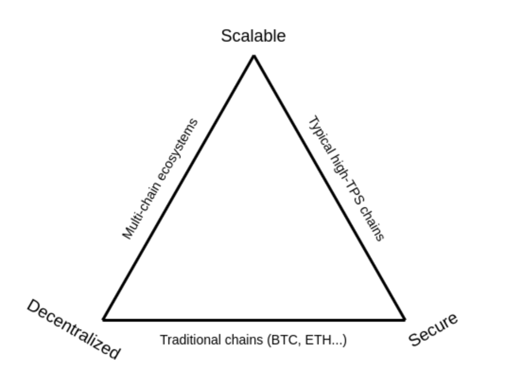

How rollups solve the scalability trilemma
Table of Contents
The scalability trilemma⌗
The scalability trilemma says that there are three properties that a blockchain try to have, and that, if you stick to “simple” techniques, you can only get two of those three. The three properties are:
- Scalability: the chain can process more transactions than a single regular node (think: a consumer laptop) can verify.
- Decentralization: the chain can run without any trust dependencies on a small group of large centralized actors. This is typically interpreted to mean that there should not be any trust (or even honest-majority assumption) of a set of nodes that you cannot join with just a consumer laptop.
- Security: the chain can resist a large percentage of participating nodes trying to attack it (ideally 50%; anything above 25% is fine, 5% is definitely not fine).
To solve the trilemma we need the not-so-simple technique of separating the execution layer from the consensus layer. Using fraud proofs and validity proofs in combination with a scalable data availability layer we can relieve full nodes from executing all transactions.
By using rollups as execution layers, the base layer focus is now narrowed to provide massive data availability, security and decentralization
Read other posts